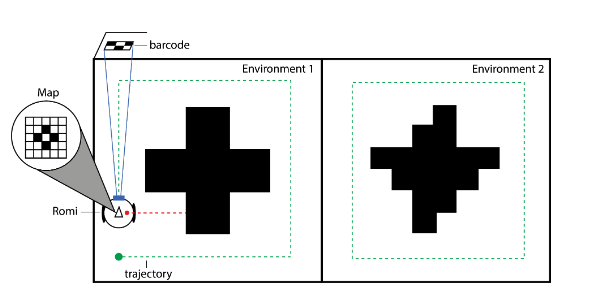
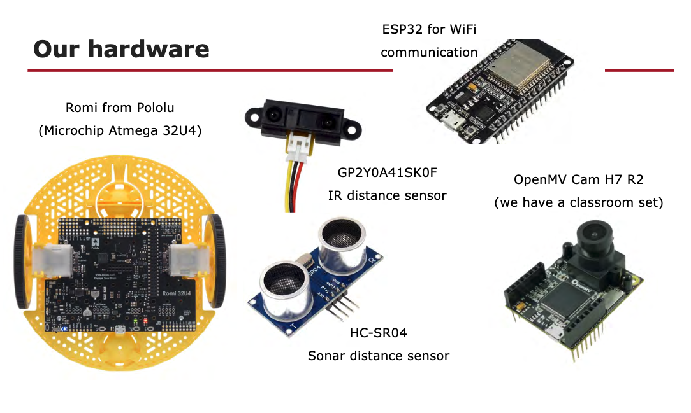
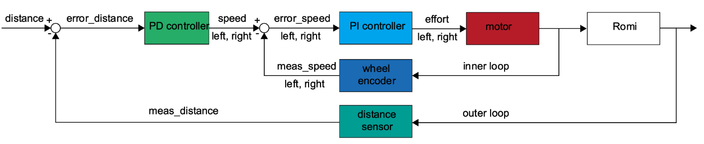
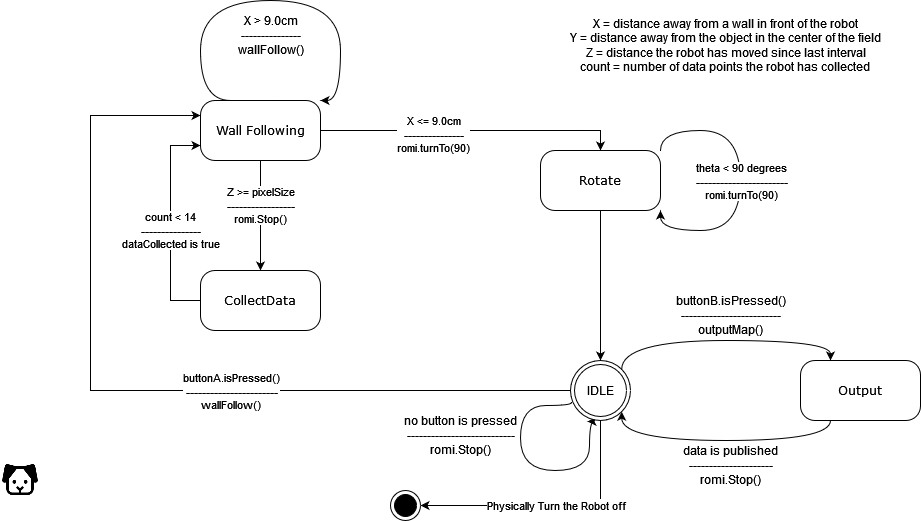

Sensing and Mapping
TLDR / Summary
The project aimed to develop a robot capable of mapping two distinct environments within an arena, requiring precise navigation, sensor fusion, and wireless data transmission. Equipped with sonar, infrared, and camera sensors, the we (the team) focused on integrating these components to achieve accurate mapping. We utilized PID control for velocity kinematics and odometry calculation to enhance motion precision. Experimentation with ultrasonic and infrared sensors for wall following highlighted sensor limitations and led to strategic fusion for improved localization. The implementation included sophisticated communication techniques like UART Serial and MQTT protocols, enhancing data exchange efficiency. Overall, the project provided valuable insights into sensor limitations, kinematics, and communication protocols, enriching the team's understanding of robotics and practical skills in sensor integration and mapping. Visit my GitHub for more details.
Description
Our project revolved around the challenging task of mapping the environment within a robot arena. The objective set for my team and me was to program a robot capable of mapping two distinct environments. This undertaking demanded intricate maneuvers, where the robot had to navigate along a wall, effectively combine data from various sensors, including distance sensors and a camera, map these inputs to the robot's position, and seamlessly transmit the generated map wirelessly to a computer using an ESP32 board. Equipped with a sonar sensor, infrared sensor, and a camera, we embarked on the programming journey. Our mission was not only to integrate these diverse sensors but also to orchestrate a symphony of data, ensuring precise mapping and accurate representation of the robot's surroundings. This multifaceted project challenged us to leverage our programming skills to synchronize sensor data, maneuver the robot strategically, and establish a seamless communication channel with the computer. The integration of an ESP32 board for wireless data transmission added an extra layer of complexity, pushing us to optimize our code for efficient real-time mapping. In summary, our collaborative efforts encompassed not only the programming intricacies involved in sensor fusion and mapping but also the practical implementation of the provided sonar sensor, infrared sensor, and camera. As we navigated the robot through the arena, our focus remained on achieving a cohesive and accurate representation of the environments, reflecting the true essence of this challenging yet rewarding project.
Execution
 Enhancing the flow and structure of the provided text: Our project initiation involved a deep dive into developing velocity kinematics, a crucial aspect that entails determining the necessary PWM signal, based on encoder counts and hardware specifications, to achieve a desired wheel speed. The foundation of our speed control rested on a PID controller, providing a robust mechanism for regulating the robot's motion. Utilizing a PID controller for velocity kinematics in a differential drive robot offers a balanced approach to control, incorporating proportional, integral, and derivative terms. This strategy ensures a prompt response to speed deviations, minimizes steady-state errors, and prevents overshooting. In addition, we calculated the odometry for the differential drive robot. Calculating odometry for the robot involves tracking incremental changes in wheel speeds over time, providing continuous updates on its position and aiding in navigation and mapping tasks. The combined use of PID control and odometry calculation enhances the robot's precision and control in motion. Transitioning from speed control, our focus shifted to wall following, a phase where we conducted experiments utilizing both an ultrasonic sensor and an infrared sensor. Through thorough testing, we observed that the ultrasonic sensor introduced more noise, necessitating additional filtering measures. In contrast, the infrared sensor exhibited lower noise levels, especially at closer distances, making it the preferred choice for wall following. However, the infrared sensor posed challenges related to changing light conditions, prompting us to implement calibration procedures and further filtering techniques to enhance its performance. Acknowledging the limitations of the infrared sensor at greater distances, we strategically incorporated an ultrasonic sensor with a conical coverage, minimizing bounced waves and narrowing our sensor space. To achieve sensor fusion, a critical element for improved localization and odometry, we harnessed the capabilities of the ultrasonic sensor. The control diagram below illustrates the integration of these sensors in our system. In addition, we used a camera as a sensor to scan April tags to locate itself on the arena. This fusion helped us ensure we knew our location. As a final touch to our comprehensive sensor setup, we employed an additional infrared sensor facing the arena, facilitating mapping tasks. We implemented a data polling strategy, pausing periodically after a predetermined change in distance, and applied median filtering to augment the accuracy of our measurements. This systematic approach, spanning velocity kinematics, speed control, wall following, and sensor fusion, showcases the meticulous planning and iterative refinement we applied to achieve a robust and versatile robotic system. Our implementation followed the following state diagram. To learn more about the project, checkout my GitHub.
What did I learn?
This project was an exciting learning experience for me! I gained insights into the intricate limitations of sensors and how environmental factors impact their performance. Furthermore, I acquired the skill of developing transfer functions between the input and output of sensors, especially when not provided with a data sheet. Delving into the realm of robotics, I expanded my knowledge by mastering both forward and inverse kinematics for a differential robot. The exploration didn't stop there - I also delved into device communication. I successfully implemented UART Serial communication, establishing a seamless connection between the camera and the board. As a final touch to my communication skills, I delved into the world of MQTT protocol, mastering the art of sending messages through an ESP32 with WiFi communication. Lastly, the project underscored the significance of mapping utilizing a myriad of sensors. This multifaceted learning journey not only broadened my understanding of robotics but also equipped me with practical skills across various aspects of sensor integration, communication protocols, and the critical importance of mapping in the field.